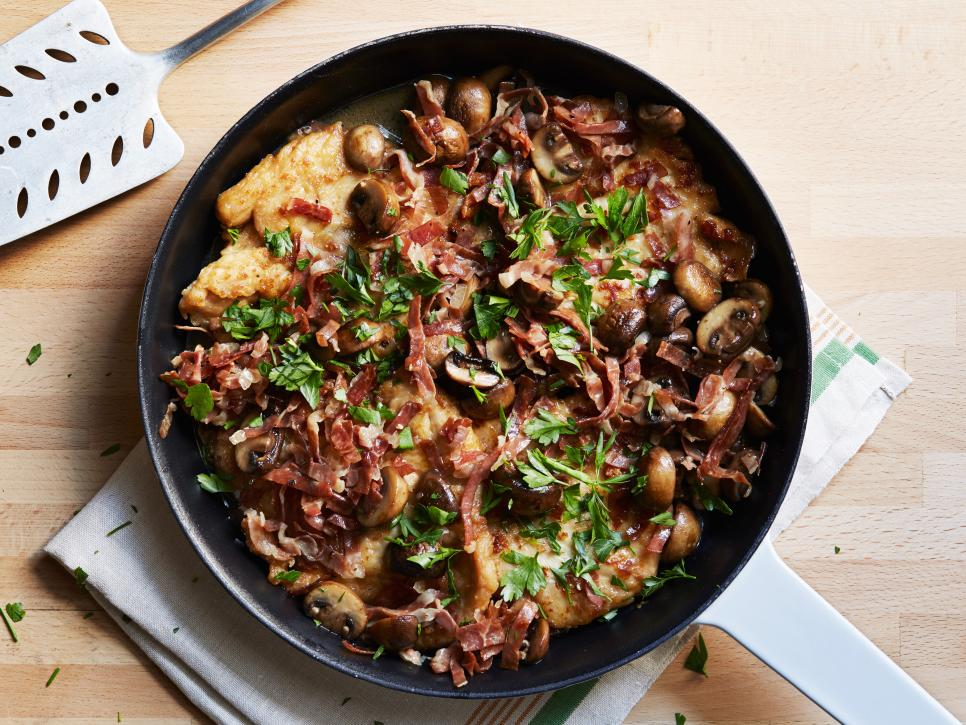

Recipe for Tyler Florence's Chicken Marsala

Chicken Marsala is one of my favorite dishes that tastes great and is simple to make! It is a great home cooked meal for your family or any guests who
may be visiting! Once you get the hang of the recipe, you can add your own special ingredients if you would like to make it unique to you! This recipe yields
4 servings, has a prep time of 20 minutes, and a cook time of 20 minutes.
Ingredients
- 4 skinless, boneless, chicken breasts (about 1 1/2 pounds)
- All-purpose flour, for dredging
- Kosher salt and freshly ground black pepper
- 1/4 cup extra-virgin olive oil
- 4 ounces prosciutto, thinly sliced
- 8 ounces crimini or porcini mushrooms, stemmed and halved
- 1/2 cup sweet Marsala wine
- 1/2 cup chicken stock
- 2 tablespoon unsalted butter
- 1/4 cup chopped flat-leaf parsley
Directions
- Put the chicken breasts side by side on a cutting board and lay a piece of plastic wrap over them; pound with a flat meat mallet, until they are about 1/4-inch thick. Put some flour in a shallow platter and season with a fair amount of salt and pepper; mix with a fork to distribute evenly.
- Heat the oil over medium-high flame in a large skillet. When the oil is nice and hot, dredge both sides of the chicken cutlets in the seasoned flour, shaking off the excess. Slip the cutlets into the pan and fry for 5 minutes on each side until golden, turning once – do this in batches if the pieces don't fit comfortably in the pan. Remove the chicken to a large platter in a single layer to keep warm.
- Lower the heat to medium and add the prosciutto to the drippings in the pan, saute for 1 minute to render out some of the fat. Now, add the mushrooms and saute until they are nicely browned and their moisture has evaporated, about 5 minutes; season with salt and pepper. Pour the Marsala in the pan and boil down for a few seconds to cook out the alcohol. Add the chicken stock and simmer for a minute to reduce the sauce slightly. Stir in the butter and return the chicken to the pan; simmer gently for 1 minute to heat the chicken through. Season with salt and pepper and garnish with chopped parsley before serving.